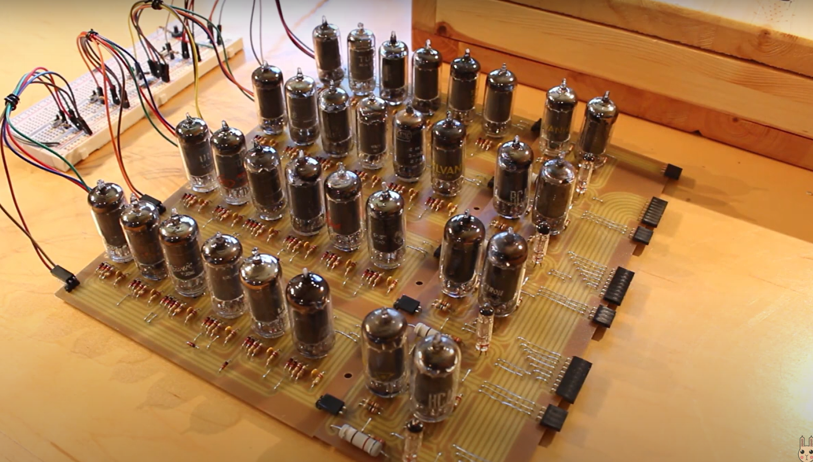
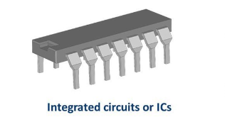
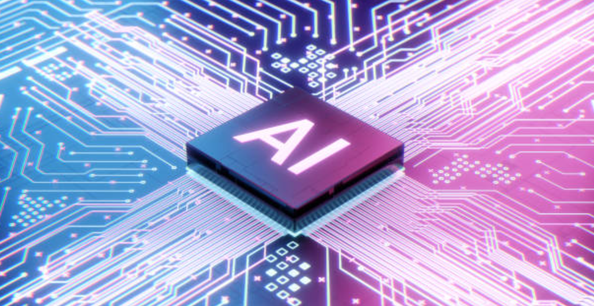

Computer Generations
Computer generations refer to the stages in the development of computer technology, each marked by significant advancements in hardware, software, and architectural design. There are generally considered to be five generations of computers:
- First Generation (1940s-1950s): The first electronic computers were developed during this period. They used vacuum tubes for circuitry and were large, slow, and expensive. Examples include the ENIAC and UNIVAC.
- Technology: Vacuum tubes.
- Advantages: Marked the beginning of electronic computing.
- Applications: Used primarily for numerical calculations and codebreaking.
- Example: ENIAC (Electronic Numerical Integrator and Computer).

- Second Generation (1950s-1960s): Transistors replaced vacuum tubes, leading to smaller, faster, and more reliable computers. Magnetic core memory and batch processing systems were also introduced during this time.
- Technology: Transistors.
- Advantages: Smaller, faster, and more reliable than vacuum tubes.
- Applications: Used for business applications, scientific computations, and military systems.
- Example: IBM 1401, IBM 7090.
- Third Generation (1960s-1970s): Integrated circuits (ICs) were invented, allowing thousands of transistors to be miniaturized and placed on a single silicon chip. This led to the development of smaller, more powerful, and more affordable computers.
- Technology: Integrated circuits (ICs).
- Advantages: Further reduction in size, cost, and power consumption.
- Applications: Mainframes, minicomputers, and early personal computers.
- Example: IBM System/360, DEC PDP-11.

- Fourth Generation (1970s-1990s): Microprocessors were introduced, enabling the development of personal computers (PCs) and workstations. This era saw the rise of the graphical user interface (GUI), networking, and the internet.
- Technology: Large-scale integration (LSI) and very large-scale integration (VLSI) chips.
- Advantages: Increased processing power, decreased size, and cost.
- Applications: Personal computers, workstations, and early networking.
- Example: Apple II, IBM PC, Commodore 64.
- Fifth Generation (1990s-present): This generation is characterized by advancements in parallel processing, artificial intelligence (AI), and supercomputing. Technologies such as cloud computing, quantum computing, and neural networks are prominent features of this era.
- Technology: Microprocessors, parallel processing, artificial intelligence (AI).
- Advantages: Significant increase in computing power, multimedia capabilities, and networking.
- Applications: Multimedia computing, internet, AI, and mobile computing.
- Example: IBM Watson, smartphones, supercomputers like IBM Summit.
